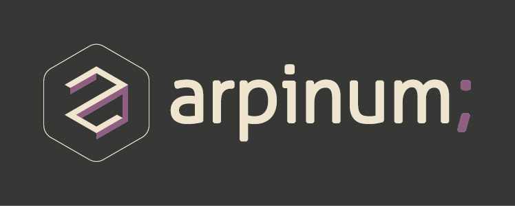
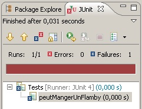

#!
Tests automatisés en Bash
Le contexte
Et si nous automatisions les opérations répétitives et sensibles ?
Un outil simple : Bash
3 fois rien finalement
- Cloner des entrepôts
- Mettre à jour des sources
Mais avec un peu d'imagination
- Cloner des entrepôts
- Mettre à jour des sources
- Changer de branche
- Exécuter des commandes
- Créer des branches
- Supprimer des branches
- Importer dans Git
- Lister les entrepôts à fusionner
- Préparer la livraison des projets
- Réaliser la livraison des projets
Et il y en a pour tout le monde

Développeurs, administrateurs, livreurs, managers
Dans des contextes multiples
avec un mode de tests manuels, mais chut!

Il faut tacler la complexité
Et si Bash était un langage de programmation ?
Les outils habituels


Certains vont me dire :
“MER IL ET FOU”
Un peu de Clean Code
- clone.sh
- pull.sh
- checkout.sh
- execute.sh
- creeLaBranche.sh
- supprimeLaBranche.sh
- importeDansGit.sh
- listeEntrepotsAFusionner.sh
- livre.sh
- branche.sh
- configuration.sh*
- entrepot.sh
- git.sh
- livraison.sh
- maven.sh
- nettoyage.sh
- preparationLivraison.sh
- systeme.sh
- tag.sh
Un équivalent à JUnit?
Bof...
Je vais créer mon api de tests automatisés en Bash...

Les objectifs de l'api
- Ressembler à xUnit,
- Etre en français,
- Etre compatible avec l'IC,
- Favoriser TDD,
- Respecter la notion de tests unitaires.
Make them first
- Fast
- Isolated
- Repeatable
- Self-verifying
- Timely
Et donc?
L'exécuteur de test
Exécuter tous les fichiers de test
function executeur_executeLesFichiersDeTestDansLeRepertoire() {
local repertoire=${1}
_initialiseLExecutionDesTests
_executeTousFichiersDeTest "${repertoire}" *Test.sh
_afficheLeResultatDesTests
_retourneUnCodeEnFonctionDuResultatDesTests
}
Exécuter un fichier de test
function _executeLeFichierDeTest() {
local fichier=${1}
printf "[Fichier] ${fichier}\n"
source "${fichier}"
_executeLeSetupGlobalDuFichier "${fichier}"
_executeLesTestsDuFichier "${fichier}"
_executeLeTeardownGlobalDuFichier "${fichier}"
printf "\n"
}
Exécuter une fonction de test
function _executeLaFonctionAuMilieuDuSetupEtTeardown() {
local fonctionTest=${1}
local fichier=${2}
echo "[Test] ${fonctionTest}"
( _executeLeSetupDuFichier "${fichier}" &&
systeme_evalueDansUnSousShell ${fonctionTest} &&
_executeLeTeardownDuFichier "${fichier}" )
_analyseLExecutionDuTest ${fonctionTest} ${?}
}
Les affirmations
Affirmer l'égalité
function affirmation_affirmeEgalite() {
local attendu=${1}
local obtenu=${2}
if [[ "${attendu}" != "${obtenu}" ]]; then
_affirmationEnErreur "Obtenu : <${obtenu}>, attendu : <${attendu}>."
fi
}
Affirmer le succés
function affirmation_affirmeSucces() {
systeme_evalueDansUnSousShell ${@}
if (( ${?} != ${SUCCES} )); then
_affirmationEnErreur "La commande a échoué au lieu de réussir."
fi
}
Quelques exemples
Un test unitaire
function recupereBienLaVersionDunPom() {
local pom="${_ressources}/pom_1.0-SNAPSHOT.xml"
local version=$(maven_recupereLaVersionDuPom "${pom}")
affirmation_affirmeEgalite "1.0-SNAPSHOT" "${version}"
}
Un test d'intégration
function ilEstPossibleDeCheckouterUnSeulEntrepot() {
entrepot_cloneLaBrancheDeLEntrepot "integration" "module-a"
source "${REPERTOIRE_SCRIPT}/checkout.sh" "master" "module-a"
local branche=$(_recupereLaBrancheCouranteDeLEntrepot "module-a")
affirmation_affirmeEgalite "master" "${branche}"
}